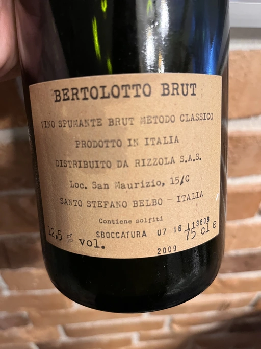

- Type
- White Sparkling, Brut
- Producer
- Cascina Bertolotto
- Vintage
- NV
- Location
- Italy, Vino (IT)
- Grapes
- Pinot Noir, Chardonnay
- Alcohol
- 12.5
- Sugar
- NA
- Price
- 841 UAH, 825 UAH, 900 UAH
- Cellar
- N/A
Producer
A winery with story stretching back to 1816. Initially owned by Galantini family, now run by Traversa family. Cascina Bertolotto is located at an altitude of 400 meters above sea level and bordering the Langhe region, Piedmont.
Ratings
2022-05-30 - 8.00
Unexpected gem. I found it by accident, lost behind a wall of mediocre crowd-pleasing Champagne labels. Based on 2009, spent at least 60 months on lees. Sunflower oil, baked apples, toast and amber. Well balanced, good balance and volume with long and persistent aftertaste. Despite age it’s still vigorous. Look, it’s not a masterpiece, but definitely worth checking and buying again.
Date of dégorgemenent: July 2016.
2022-07-05 - 8.20
Served blind and I enjoyed the expression on other people’s faces. Truly, it’s a hidden gem. Intense and rewarding. Baked apples, sunflower oil, toast and amber. Well balanced, it has good (e.g. high) acidity and long persistent and flavourful aftertaste. Again, it’s not complex yet delicious and well made. Good choice for those who enjoy Champagne.
Date of dégorgemenent: January 2017.
Tasted as part of Mixed Bag Vol. 1.